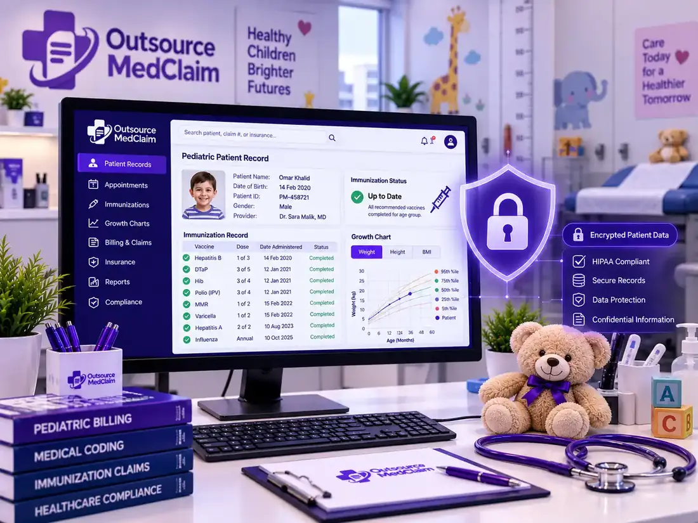

Pediatric practices lose thousands in recoverable revenue per month due to aversions to well-child visits, billing errors when vaccinating children, and gaps in documentation required for Medicaid reimbursement. That is why our Outsource Pediatric Billing specialists handle the entire revenue cycle, from age-based coding to AR follow-up, so your physicians can devote their time to the patients at hand.
Standard medical billing is complex, but pediatric billing can be even more involved. With well-child visits, developmental screenings, immunizations, and same-day sick visits to consider, along with Medicaid requirements, coding errors can lead to claims denials and payment hassles, resulting in revenue loss. Specialty-specific coding guidelines from AAP outline the proper use of well-child visits, developmental screenings, vaccine administration, and sick-visit coding by age.
Most pediatric practices depend on Medicaid and insurance payments, which create payer rules, documentation needs, and coding requirements that are frequently updated by practice guidelines. Training an in-house team on these updates is both time- and cost-intensive.
With outsourced pediatric billing, a practice has access to specialists who build their knowledge on pediatric coding, how vaccines are properly billed when preventive care is required, and what is required, as well as payer-specific regulations. It reviews every claim for accuracy before it is submitted, helping reduce denials, improve collections, and expedite cash flow.
This means that instead of wasting precious staff time correcting claims, appealing decisions, and following up on payments, your team can spend more time providing top-notch care. Meanwhile, skilled providers manage the whole revenue cycle. The outcome is a better financial presentation, fewer administrative hassles, and an effective practice.
Well-child visits use age-specific CPT codes (99381–99385 for new patients, 99391–99395 for established). Applying the wrong code for the patient's age is a common, preventable denial trigger in pediatric billing.
Vaccine billing requires separate HCPCS or CPT product codes, along with administration codes, and the correct modifier when multiple vaccines are administered in the same visit. Errors here are among the most frequent sources of pediatric claim underpayment.
Pediatric clinics handle among the highest patient volumes in primary care. Without dedicated billing follow-up, aging AR builds quickly, with underpaid and denied claims accumulating faster than in-house staff can resolve them.
Children's insurance coverage changes frequently, driven by Medicaid redetermination cycles, coverage through non-custodial parents, and CHIP eligibility, making real-time eligibility verification essential before every encounter.
Billing a problem-focused sick visit alongside a well-child visit on the same date requires modifier 25 on the E&M code and specific documentation that the sick visit was a separately identifiable service. Omitting the modifier or inadequate documentation produces automatic denials.
State Medicaid programs each apply different coverage rules, EPSDT documentation requirements, and prior authorization thresholds for pediatric services. Practices billing across multiple Medicaid plans face compounding compliance risk without payer-specific expertise.
Comprehensive pediatric billing services covering every stage of the revenue cycle, from pre-visit eligibility verification to AR resolution, managed by billing specialists with direct experience in pediatric coding, Medicaid billing, and AAP guideline compliance.
Real-time eligibility confirmation before every appointment, active coverage, Medicaid status, CHIP enrollment, and secondary payer coordination verified upfront.
Age-specific coding for well-child visits, sick visits, and developmental screenings, aligned with current AAP CPT coding guidelines and ICD-10 diagnosis linkage requirements.
Complete, clean claims submitted via Electronic Data Interchange (EDI) with all required attachments and correct modifier application for same-day encounters.
Accurate vaccine administration coding using HCPCS and CPT product codes, with correct administration fee billing and multi-vaccine modifier application.
Payer-specific billing for state Medicaid programs, CHIP, commercial carriers, and managed care plans, with EPSDT documentation support for Medicaid preventive services.
Accurate EOB posting, adjustment coding, and identification of underpayments against Medicaid fee schedules and commercial contracted rates.
Structured follow-up on all outstanding claims, categorized by aging bucket, payer, and denial type, with weekly AR aging review and escalation protocols.
Root cause analysis on denied pediatric claims, appeal preparation with clinical documentation, and resubmission to recover revenue lost to coding or documentation errors.
Clear, compliant patient statements for copay and balance due amounts, with family-friendly communication that preserves the practice relationship.
Regular practice-level reporting on collections, payer mix performance, denial trends, and AR aging, delivered on a consistent schedule without being requested.
Every claim follows a structured workflow designed to prevent errors at the source and follow up on everything that leaves the office, on schedule, across every payer in your panel.
Insurance verified before every appointment, active coverage, Medicaid/CHIP status, and secondary payer confirmed in real time.
Clinical notes are reviewed for medical necessity support, diagnosis-code linkage, and same-day encounter documentation before coding begins.
Age-specific preventive care codes, sick-visit E&M codes, vaccine administration codes, and HCPCS product codes were applied accurately per AAP guidelines.
Electronic claim submission with all required modifiers, diagnosis pointers, and vaccine code attachments, within 24–48 hours of encounter documentation receipt.
Active follow-up on all pending claims within payer-specific processing windows, no claim submitted and left without a status check.
EOBs posted accurately and reconciled against Medicaid fee schedules and commercial contracted rates; underpayments were identified and flagged for recovery.
Denied claims appealed with clinical documentation. AR aging is reviewed weekly. Underpayments contested before the payer adjustment windows close.
Pediatric billing uses a distinct coding framework that differs from adult medicine in several important respects. Preventive care codes are age-stratified, vaccine administration requires layered HCPCS and CPT codes, and the rules governing what can and cannot be billed on the same day as a well-child visit are specific and consistently misapplied.
Our coders are trained in current CPT guidelines as interpreted by the American Academy of Pediatrics (AAP) and apply them alongside Medicaid pediatric billing guidelines and Centers for Medicare & Medicaid Services (CMS) preventive care standards.
| Service Type | CPT / HCPCS Codes | Key Coding Requirement |
|---|---|---|
| Well-Child Visit (New Patient) | 99381–99385 | Code selected by patient age group; incorrect age-range code is a common denial trigger |
| Well-Child Visit (Established) | 99391–99395 | Established vs. new patient distinction must be accurate; documentation must support the preventive nature of the visit |
| Same-Day Sick Visit | 99202–99215 + Mod 25 | Modifier 25 required; documentation must clearly identify a separately identifiable E&M service beyond the preventive visit |
| Developmental Screening | 96110 | Standardized screening tool must be documented; results and physician interpretation required for billing |
| Vaccine Administration (1st) | 90460 + 90461 (add-on) | 90460 billed once per encounter; 90461 added for each additional vaccine component with counseling documented |
| Vaccine Administration (no counseling) | 90471 + 90472 | Used when physician counseling is not performed; common for older pediatric patients and adolescent immunizations |
| Vaccine Product Codes | Various HCPCS / CPT | Separate product code required alongside each administration code; must match the actual vaccine administered |
| EPSDT Services (Medicaid) | Payer-specific | Early and Periodic Screening, Diagnostic, and Treatment documentation is required and varies by state Medicaid program. |
Our billing team works directly within the Electronic Health Records (EHR) and practice management systems your clinic already uses, with no migration of patient records and no new platforms for clinical staff to learn. Billing operates inside your existing environment with secure, role-restricted access. Electronic Data Interchange (EDI) claim submission connects directly to Medicaid, commercial payer clearinghouses, and Medicare for real-time claim status and faster payment processing.
Vaccine administration data flows from your EHR's immunization module into billing workflows without manual re-entry, reducing transcription errors and ensuring product codes and administration codes are matched correctly for every immunization encounter.
Direct integration with your existing pediatric EHR platform
EDI claim submission to Medicaid, CHIP, and commercial payers
Real-time eligibility verification through your clearinghouse connection
Immunization module integration for accurate vaccine code matching
Payment posting directly to patient ledgers within your practice management system
AR and denial reporting are accessible through your existing dashboard



Patient records for minors are protected by specific privacy protections under the Health Insurance Portability and Accountability Act (HIPAA). In many states, additional minor-specific confidentiality requirements apply to adolescent health services. All pediatric billing workflows at Outsource MedClaim are conducted in full HIPAA compliance, with encrypted data transmission, role-based access controls, and signed business associate agreements (BAAs) at the start of every engagement.
Clinical documentation, immunization records, insurance data, and personally identifiable information processed during billing are accessed only by authorized billing personnel with a direct operational need. No patient data is shared beyond what is required for claim submission and payer follow-up, consistent with HIPAA minimum necessary standards.
Clean claims submitted within 24–48 hours of documentation receipt, with structured payer follow-up that prevents processing delays from building into AR backlogs.
Age-specific coding accuracy, correct vaccine administration codes, and pre-submission documentation review eliminate the errors responsible for most pediatric claim rejections.
Every stage, from eligibility to AR resolution, is managed with workflows built specifically for pediatric billing, not adapted from adult primary care or general medical billing.
Pediatric clinical and front office staff are freed from insurance follow-up, denial rework, and billing management, returning time to patient care and practice operations.
Regular, practice-level reporting on collections, payer performance, denial trends, and AR health, without having to request it or compile it from raw data.
Faster submissions, fewer denials, and consistent AR follow-up produce more predictable monthly collections, reducing the cash flow unpredictability common in high-volume pediatric practices.
The outcomes of specialist-managed pediatric billing are measurable in denial rates, collection ratios, and AR days. These benchmarks reflect what structured, pediatric-specific billing workflows consistently produce.
Our pediatric revenue cycle management services are structured to accommodate the full range of pediatric care environments, from solo pediatricians to multi-location children's health systems, each with different payer mixes, patient volumes, and specialty billing requirements.
Primary care pediatric offices are managing high daily patient volumes across well-child visits, sick, and immunization visits.
Hospital-based pediatric billing with complex payer mixes, facility billing requirements, and inpatient encounter coding.
Multi-physician pediatric groups require scalable billing support across providers, locations, and payer panels.
NICU and neonatal specialty billing with specific coding requirements for critical care, prolonged services, and newborn care management.
Urgent care pediatric billing with high-acuity sick visits, after-hours encounter coding, and mixed commercial and Medicaid payer environments.
Subspecialty pediatric billing for cardiology, neurology, endocrinology, and other specialties with unique coding and prior authorization requirements.
When comparing the total cost of in-house pediatric billing against outsourcing, most practices find the financial case for outsourcing is clear, before accounting for the revenue improvement that comes with lower denial rates and better AR management.
Full-time salary: $42,000–$58,000/year for a billing specialist
Benefits, payroll taxes, and HR costs add 25–35% on top of salary
Annual CPT and Medicaid billing update training, time, and cost
Billing software licenses and clearinghouse fees
Productivity gaps during vacation, sick leave, and staff turnover
Revenue lost to coding errors and uncontested denials
Transparent percentage of collections or flat monthly fee, no overhead
Pediatric-trained billing specialists from day one, with no training investment
Annual AAP and Medicaid code updates absorbed by our team
No software, clearinghouse, or infrastructure costs to manage
Continuous billing coverage, no productivity gaps from staff absence
Higher first-pass approval rates that improve net collections from month one
A fixed percentage of monthly collections and billing performance is directly aligned with your revenue. We earn when you earn.
A consistent monthly fee covering all billing services. Predictable overhead and full service scope regardless of monthly claim volume fluctuations.
A flat fee per claim submitted and suited to smaller pediatric practices or lower-volume billing engagements with consistent encounter types.
Tailored pricing for children's hospitals, multi-location pediatric groups, or practices with specialty billing alongside general pediatrics.
Contact our team for a customized quote based on your monthly encounter volume, payer mix, and current AR status.
Request a Free Billing ConsultationVaccine administration billing was our biggest problem area; our staff was applying the 90471 administration code across the board, rather than using 90460 with add-on codes when counseling was performed. Outsource MedClaim caught it in the initial audit, corrected the workflow, and we immediately started collecting more per immunization visit. The difference adds up quickly when you're doing 30 to 40 vaccines a day.
We were losing Medicaid well-child visit claims at a 19% denial rate because our documentation wasn't meeting the EPSDT requirements for our state program. Outsource MedClaim identified the documentation gap, worked with our clinical staff on what needed to be in the notes, and our Medicaid denial rate dropped to under 5% within two billing cycles. The revenue impact was significant.
We see over 200 patients a week, and our average AR is now over 90 days. Our two billing staff simply couldn't keep up with the follow-up volume. Since outsourcing to Outsource MedClaim, our AR average is at 32 days, our front office staff is doing what they were hired to do, and we have a detailed weekly report showing exactly where every outstanding claim stands. It's a completely different practice from an administrative standpoint.
Outsourcing pediatric billing allows practices to focus on patient care while experienced billing specialists manage coding, claims submission, payment posting, and denial follow-up. This improves revenue cycle performance, reduces administrative workload, and helps maximize reimbursements.
Pediatric billing involves unique coding requirements for well-child visits, developmental screenings, immunizations, newborn care, and preventive services. It also requires expertise in payer-specific guidelines and age-related billing regulations to ensure accurate claim submission.
Yes. We manage vaccine and immunization billing, including proper coding, administration charges, inventory-related documentation requirements, and payer compliance to help pediatric practices receive appropriate reimbursement for vaccination services.
Our team performs thorough claim reviews, accurate coding, eligibility verification, and compliance checks before submission. We also track denied claims, identify root causes, and implement corrective actions to minimize future denials and improve claim acceptance rates.
Yes. We follow strict HIPAA-compliant processes to protect patient information and maintain data security. Our workflows, systems, and staff training are designed to ensure confidentiality and regulatory compliance at every stage of the billing process.
The onboarding timeline depends on the size and complexity of your practice, but most pediatric billing implementations can begin within a few weeks. We work closely with your team to ensure a smooth transition with minimal disruption to daily operations.
Yes. We have experience managing Medicaid billing for pediatric providers, including eligibility verification, claim submission, compliance requirements, and follow-up activities to help practices optimize reimbursement from government payers.
Yes. Our pediatric billing services can work with many leading EHR and practice management systems. We coordinate with your existing technology infrastructure to streamline workflows, improve data accuracy, and support efficient revenue cycle management.
Denied well-child visits, underpaid immunization encounters, and aging Medicaid AR are recoverable revenue. Let our pediatric billing specialists audit your current process, at no cost, and show you exactly where the gaps are.
A billing specialist will reach out within one business day to arrange your free assessment.
Submitting shares no patient data. We execute a BAA before any records are accessed.